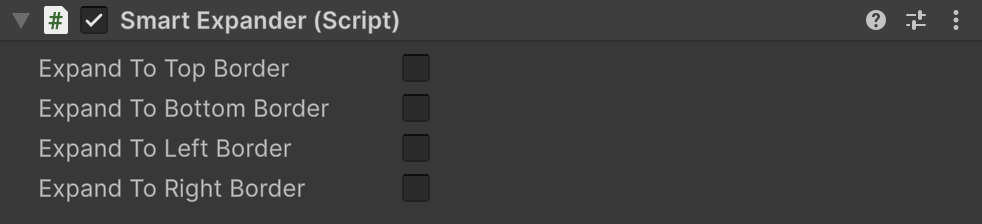
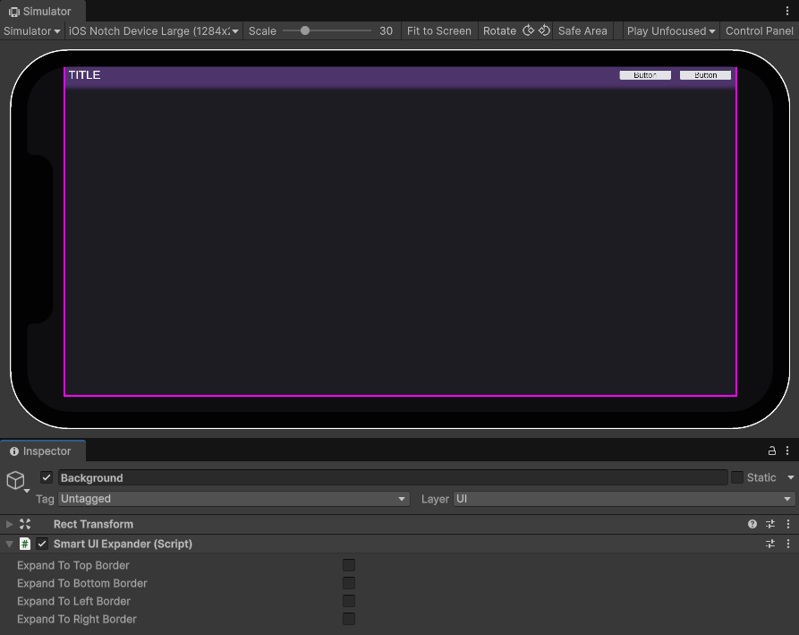

Smart UI Expander component
Used to expand a Rect Transform outside of the parent UI Scaler to the Canvas borders.

| Field | Description |
|---|---|
| Expand To Top Border, Bottom, Left, Right | The edges that are moved to the Canvas borders. |
How it works
The Smart UI Expander follows the parent Rect Transform and uses its rectangle as the base from which to expand to the Canvas borders. The four expansion fields choose the edges that reach the borders; the other edges stay on the edges of the parent. The whole Rect Transform is set by the component and recalculated on every resize, so it is greyed out in the Inspector, and turning an edge off simply puts it back on the edge of the parent.
Place the Smart UI Expander on a child of the element it extends, for example the background of a header: the header Rect Transform defines the size inside the safe area, and the background child with the Smart UI Expander covers the header and reaches past it to the screen borders. Keep the header content, such as titles and buttons, next to the background, not under it, so it stays inside the safe area.
Tip
On screens with a large safe area margin, an expanded background gets taller or wider than designed. Use an Image with the Sliced or Tiled image type, or keep gradients and details inside the sprite's border, so the extra space is filled with the plain middle of the sprite instead of a stretched gradient.
Showcase
Here is a simple example in the Device Simulator on a phone with a notch. The magenta outline is the safe area border of the Smart UI Scaler window, and the UI Scaler fits inside it. The header is at the top and its purple background has the Smart UI Expander component.
In the first image you can see that the header is inside the safe area and the Smart UI Expander does not do anything as no expansion field is selected.

After the expansion to the top, left and right borders is turned on, the header background reaches past the safe area to the screen edges, while the title and buttons stay inside the safe area.
You can find the implementation of this example inside the Demo 7 of the plugin.
Placing elements against the screen edge
UI Scalers keep their content inside the safe area. To place an element against the real screen edge and still scale it with the UI, for example a corner decoration, put it under a Rect Transform with a Smart UI Expander that expands to all four borders, directly under the UI Scaler.